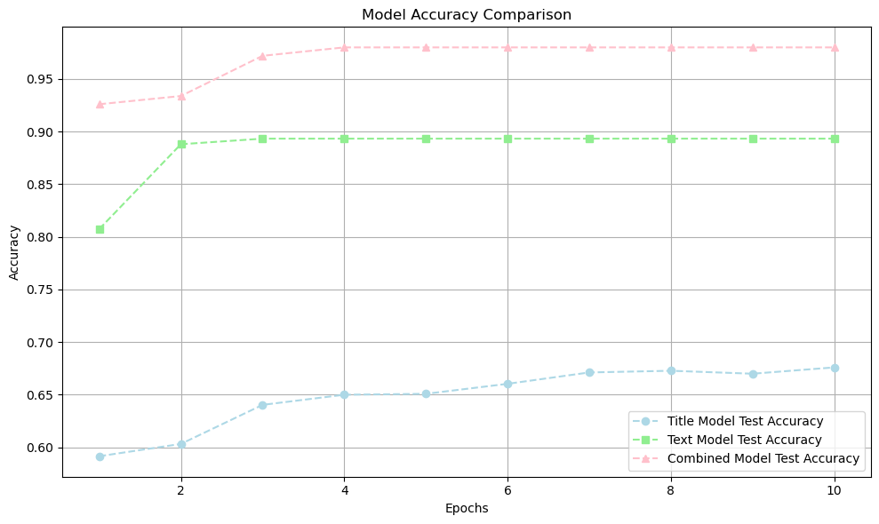

from IPython.display import Image
Image(filename='/Users/athena/Desktop/ModelTrainingHistory.jpg')
Athena Mo
March 5, 2024
In this blog, I will be sharing with you my three models (focusing on different aspects) on fake news classification. The dataset that is used consists of labelled points. Each row of the data includes: title of the article, full article text, and its label (0 if the article is true and 1 if the article contains fake news).
First, we begin by importing necessary libraries such as Pandas for data manipulation, TensorFlow for building the neural network model, NLTK for natural language processing (stopwords), and scikit-learn for splitting the dataset. Next, we load the dataset from a CSV file hosted on GitHub and download the NLTK stopwords - this will be used later.
The function calculate_vocabulary_size is used to compute the size of the vocabulary in the text data, which is the number of unique words. This function is applied to both the title and text columns of the dataset.
The function make_dataset preprocesses the text data by converting it to lowercase, removing stopwords, tokenizing, and padding sequences to a fixed length. Following the function, we create a TensorFlow Dataset object from the preprocessed data and splits it into training and validation sets using the train_test_split function from scikit-learn.
Finally, we calculate the base rate for the dataset, which is the proportion of the majority class (fake or real news) in the training set.
The following code block prints the vocabulary size and base rate.
import pandas as pd
import tensorflow as tf
from keras.layers import Input, Embedding, Dense, Concatenate, Dropout, SimpleRNN, GRU
from keras.models import Model
from nltk.corpus import stopwords
from sklearn.model_selection import train_test_split
from tensorflow.keras.preprocessing.text import Tokenizer
from tensorflow.keras.preprocessing.sequence import pad_sequences
# Load the dataset
train_url = "https://github.com/PhilChodrow/PIC16b/blob/master/datasets/fake_news_train.csv?raw=true"
df = pd.read_csv(train_url)
# Download NLTK stopwords
import nltk
nltk.download('stopwords')
stop_words = set(stopwords.words('english'))
# Calculate the size of the vocabulary
def calculate_vocabulary_size(text_column):
all_words = ' '.join(text_column).split()
unique_words = set(all_words)
return len(unique_words)
# Calculate the size of the vocabulary for both title and text columns
size_vocabulary_title = calculate_vocabulary_size(df['title'])
size_vocabulary_text = calculate_vocabulary_size(df['text'])
# Use the maximum vocabulary size from title and text columns
size_vocabulary = max(size_vocabulary_title, size_vocabulary_text)
print("Vocabulary Size:", size_vocabulary)
def make_dataset(df):
# Lowercase the text and title columns
df['text'] = df['text'].str.lower()
df['title'] = df['title'].str.lower()
# Remove stopwords from the text and title columns using NLTK
df['text'] = df['text'].apply(lambda x: ' '.join([word for word in x.split() if word not in stop_words]))
df['title'] = df['title'].apply(lambda x: ' '.join([word for word in x.split() if word not in stop_words]))
# Tokenize the text and title columns
tokenizer = Tokenizer(num_words=size_vocabulary)
tokenizer.fit_on_texts(df['text'].values)
tokenizer.fit_on_texts(df['title'].values)
# Convert text to sequences and pad them
text_sequences = pad_sequences(tokenizer.texts_to_sequences(df['text'].values))
title_sequences = pad_sequences(tokenizer.texts_to_sequences(df['title'].values))
# Combine title and text sequences into a tuple
sequences = (title_sequences, text_sequences)
# Convert the DataFrame to a TensorFlow Dataset
dataset = tf.data.Dataset.from_tensor_slices((sequences, df['fake'].values))
return dataset
# Create datasets
train_df, val_df = train_test_split(df, test_size=0.2, random_state=42)
train_dataset = make_dataset(train_df).batch(100)
val_dataset = make_dataset(val_df).batch(100)
# Calculate the base rate for the dataset
base_rate = max(train_df['fake'].value_counts(normalize=True))
print("Base Rate:", base_rate)Here is the output:
Now we define three separate models for classifying fake news based on the article title, text, or both.
Firstly, we define the shared layers - an Embedding layer and an RNN layer.
Then, three models are defined and, for each model, the code follows a similar structure:
# Define the shared layers
embedding_layer = Embedding(input_dim=size_vocabulary, output_dim=100)
rnn_layer = SimpleRNN(128, return_sequences=True) # Change LSTM to SimpleRNN or GRU
# Model using only the article title
title_input = Input(shape=(None,))
title_embedding = embedding_layer(title_input)
title_rnn = rnn_layer(title_embedding)
title_rnn = SimpleRNN(128)(title_rnn) # Change LSTM to SimpleRNN or GRU
title_output = Dense(1, activation='sigmoid')(title_rnn)
title_model = Model(inputs=title_input, outputs=title_output)
# Model using only the article text
text_input = Input(shape=(None,))
text_embedding = embedding_layer(text_input)
text_rnn = rnn_layer(text_embedding)
text_dropout = Dropout(0.5)(text_rnn) # Add dropout layer with dropout rate of 0.5
text_rnn = SimpleRNN(128)(text_dropout) # Change LSTM to SimpleRNN or GRU
text_output = Dense(1, activation='sigmoid')(text_rnn)
text_model = Model(inputs=text_input, outputs=text_output)
# Model using both article title and text
title_input = Input(shape=(None,))
text_input = Input(shape=(None,))
title_embedding = embedding_layer(title_input)
text_embedding = embedding_layer(text_input)
title_rnn = rnn_layer(title_embedding)
title_dropout = Dropout(0.5)(title_rnn) # Add dropout layer with dropout rate of 0.5
title_rnn = SimpleRNN(128)(title_dropout) # Change LSTM to SimpleRNN or GRU
text_rnn = rnn_layer(text_embedding)
text_dropout = Dropout(0.5)(text_rnn) # Add dropout layer with dropout rate of 0.5
text_rnn = SimpleRNN(128)(text_dropout) # Change LSTM to SimpleRNN or GRU
concatenated = Concatenate()([title_rnn, text_rnn])
combined_output = Dense(1, activation='sigmoid')(concatenated)
combined_model = Model(inputs=[title_input, text_input], outputs=combined_output)Now we compile and train the three models for text classification tasks.
First, the compile() function configures each model for training by specifying the optimizer, loss function, and evaluation metrics. In this case, the Adam optimizer is chosen, along with binary cross-entropy loss, which is typical for binary classification problems, and accuracy as the metric to monitor during training.
Following compilation, the fit() function is called for each model to train them on the provided data. For the title_model and text_model, the training data is extracted from the train_dataset using a mapping function to select only the relevant inputs (title or text) and their corresponding labels. Similarly, the validation data is prepared from the val_dataset. These models are trained independently for 10 epochs, with the training progress displayed (verbose=1).
For the combined_model, which takes both the title and text inputs, the entire train_dataset is directly used, as it’s already structured to include both inputs. Similarly, the validation data from val_dataset is utilized. This model is also trained for 10 epochs, with training progress displayed.
# Compile the models
title_model.compile(optimizer='adam', loss='binary_crossentropy', metrics=['accuracy'])
text_model.compile(optimizer='adam', loss='binary_crossentropy', metrics=['accuracy'])
combined_model.compile(optimizer='adam', loss='binary_crossentropy', metrics=['accuracy'])
# Train the models
title_history = title_model.fit(train_dataset.map(lambda x, y: (x[0], y)), validation_data=val_dataset.map(lambda x, y: (x[0], y)), epochs=10, verbose=1)
text_history = text_model.fit(train_dataset.map(lambda x, y: (x[1], y)), validation_data=val_dataset.map(lambda x, y: (x[1], y)), epochs=10, verbose=1)
combined_history = combined_model.fit(train_dataset, validation_data=val_dataset, epochs=10, verbose=1)I used the following code to evaluate all three models. Knowing that model 3 is the best performing, with a validation accuracy of 0.62.
# Evaluate models on the validation set
title_eval = title_model.evaluate(val_dataset.map(lambda x, y: (x[0], y)))
text_eval = text_model.evaluate(val_dataset.map(lambda x, y: (x[1], y)))
combined_eval = combined_model.evaluate(val_dataset)
# Print evaluation results
print("Title Model Evaluation:")
print("Loss:", title_eval[0])
print("Accuracy:", title_eval[1])
print("\nText Model Evaluation:")
print("Loss:", text_eval[0])
print("Accuracy:", text_eval[1])
print("\nCombined Model Evaluation:")
print("Loss:", combined_eval[0])
print("Accuracy:", combined_eval[1])Outputs:
45/45 [==============================] - 0s 4ms/step - loss: 4.0216 - accuracy: 0.6726
45/45 [==============================] - 3s 76ms/step - loss: 2.9807 - accuracy: 0.8914
45/45 [==============================] - 3s 73ms/step - loss: 2.8842 - accuracy: 0.9869
Title Model Evaluation:
Loss: 4.021571159362793
Accuracy: 0.6726235061073303
Text Model Evaluation:
Loss: 2.9806952476501465
Accuracy: 0.8914385829734802
Combined Model Evaluation:
Loss: 2.8841543197631836
Accuracy: 0.9869264912605286